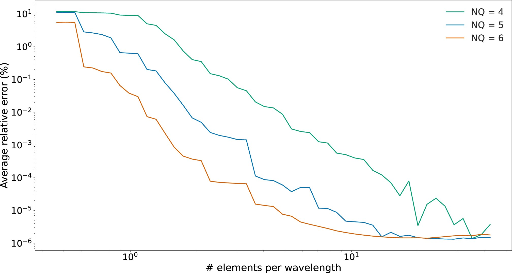

Paper workflows / ex5
EX5 · SEM step-size convergence
Repeats the same filtered response over 50 logarithmically decreasing SEM step sizes and compares each run with the finest-step result. The plotted error is an internal convergence measure, not an external reference comparison.


Configuration
Uses data/params/ex5.txt and the fixed NQ=6 path in the current executable. Each step rebuilds the SEM mesh and solves the configured acceleration case.
Comparison inputs
The finest step in the same run is used as the comparison reference.
Executable and outputs
cmake -S . -B build/release -DDSPECM1D_BUILD_BENCHMARKS=ON
cmake --build build/release --target ex5 --parallel 2
OMP_NUM_THREADS=2 ./build/release/bin/ex5The executable writes ex5_w_NQ6_step.out, ex5_t_NQ6_step.out and ex5_NQ6_step_error_50.out under build/release/output/.
Plot command
Run from the repository root after producing the required output files:
DSPECM1D_BUILD_DIR=build/release python3 plotting/functions/ex5.pyScope and limits
This is published Figure 6. The paper compares 4-, 5- and 6-point SEM runs over a 500-minute series against a finest-mesh reference. The current ex5 input uses a 240-minute series; its executable is fixed to NQ6, while the plotting script expects NQ4, NQ5 and NQ6 output files. The displayed paper figure is the published source image, not a plot generated from this checkout.